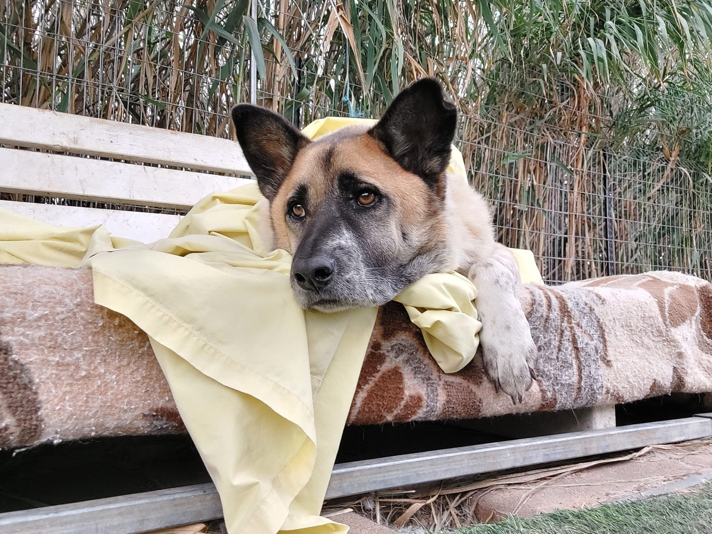

מיכה
10 שנים הלב הפועם וזקן השבט · בן 10מיכה הוא הכלב הכי מבוגר בבית המחסה, בן 10, ומי שמכיר אותו יודע שהוא הלב הפועם של המקום. למרות כל מה שעבר בחייו, מיכה נשאר כלב מלא אהבה, ששום דבר לא משמח אותו יותר מאשר לקבל חופן נדיב של חטיפים ותשומת לב.